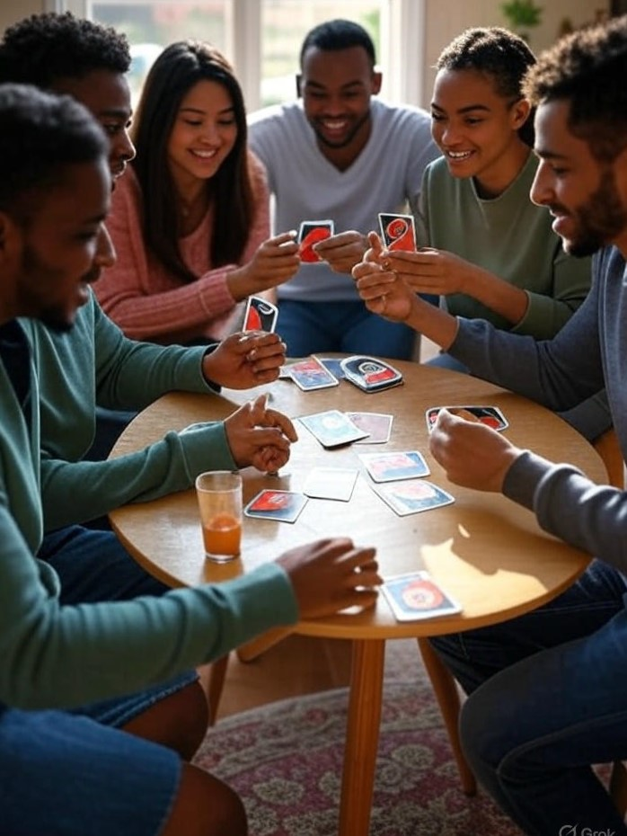

UNO Rules
UNO is played with a specially printed deck. The game is for 2 to 10 players, ages 7 and up. Each player is dealt 7 cards, and the remaining cards are placed face down to form the draw pile. Turn over the top card of the draw pile to begin the discard pile.
Players take turns matching a card from their hand to the card on the top of the discard pile, either by number, color, or symbol. For detailed rules, check out official rules.